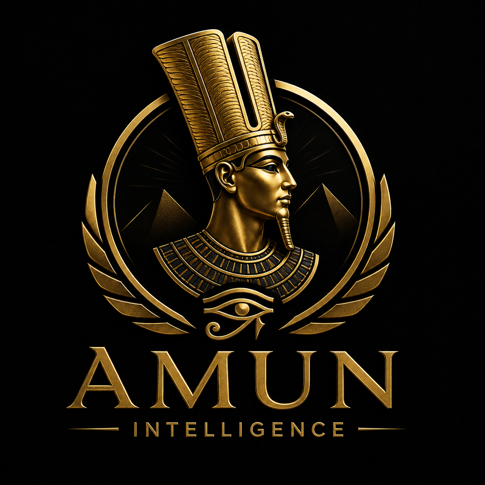

نحوّل البيانات والمعلومات المتناثرة إلى Intelligence قابلة للتحليل واتخاذ القرار — بدمج الخبرة البشرية مع أنظمة الذكاء الاصطناعي متعددة الوكلاء.
AMUN Corporate Intelligence (ACI) مؤسسة متخصصة في استخبارات الشركات وتحليل المعلومات ودعم اتخاذ القرار، تجمع بين الذكاء الاصطناعي، OSINT، تحليل البيانات، الأمن السيبراني، التحقيقات الرقمية، واستخبارات الأعمال.
نعتمد نموذجًا حديثًا يدمج الخبرة البشرية مع الأنظمة الذكية متعددة الوكلاء، لبناء قدرات تجمع المعلومات وتتحقق منها وتربطها وتحللها وتستخرج المؤشرات والأنماط والعلاقات ذات الصلة.
هدفنا ليس مجرد تقديم معلومات — بل مساعدة المؤسسات على فهم ما يحدث، ولماذا يحدث، وماذا يعني ذلك لأعمالها.
أن تصبح ACI منصة ومؤسسة رائدة في مجال Corporate Intelligence في مصر والمنطقة العربية، وأن نقدم نموذجًا متقدمًا لاستخدام الذكاء الاصطناعي والاستخبارات المفتوحة في دعم المؤسسات وصنّاع القرار.
نسعى لبناء منظومة Intelligence حديثة تتعامل مع كميات ضخمة من المعلومات وتحوّلها إلى معرفة منظمة ومؤشرات قابلة للاستخدام.
تمكين الشركات والمؤسسات من الوصول إلى معلومات موثوقة وتحليلات عميقة تساعدها على:
بناء قدرات متقدمة في Corporate & Business Intelligence لفهم البيئة الداخلية والخارجية.
في كل مراحل الدورة: Collection → Processing → Analysis → Correlation → Intelligence → Reporting
قدرات متقدمة في جمع وتحليل المعلومات المتاحة قانونيًا من المصادر المفتوحة.
تحويل التقارير إلى أنظمة تفهم: Situation → Evidence → Risk → Opportunity → Options
تسع قدرات استخباراتية متكاملة تغطي دورة المعلومة كاملة — من المصدر حتى القرار.
تحليل الشركات والقطاعات والأسواق والمنافسين وتقديم صورة استخباراتية متكاملة.
فحص وتحليل الأطراف التجارية قبل الاستثمار أو الشراكة أو الاستحواذ أو التعاقد أو التوسع.
تحليل المنتجات والخدمات والأسواق والاستراتيجيات والنشاط الرقمي والتغيرات في السوق.
دراسة الأسواق والقطاعات وتحديد الاتجاهات والفرص والتهديدات واللاعبين الرئيسيين.
تحديد وتحليل المخاطر التي يمكن أن تؤثر على المؤسسة أو المشروع قبل وقوعها.
جمع وتحليل المعلومات من المصادر المفتوحة والمتاحة قانونيًا: الشركات، الأشخاص، السجلات، الأخبار.
تحليل البصمة الرقمية وسطح الهجوم وإساءة استخدام العلامة التجارية ومؤشرات التهديد.
تحليل الحالات التجارية والرقمية المعقدة لتحديد العلاقات والأحداث والمؤشرات ذات الصلة.
تحليل البيانات والمؤشرات للكشف عن الأنماط غير المعتادة التي تستدعي تحقيقًا إضافيًا.
ثماني مراحل منظمة تعمل باستمرار — شاهد الرادار وهو يتنقل بين المراحل.
المعلومة وحدها ليست استخبارات — الفرق هو الدليل، والسياق، والتحليل، ومستوى الثقة.
بدلًا من وكيل واحد — مهمة استخباراتية واحدة تُوزَّع على منظومة من الوكلاء المتخصصين ينسق بينهم المدير الاستخباراتي.
يجمع المعلومات المفتوحة من المصادر المتاحة قانونيًا.
يحلل الشركات وكياناتها وهيكلها ونشاطها.
يحلل المؤشرات المالية المتاحة.
يحلل المؤشرات الرقمية والأمنية.
يحلل المعلومات الاجتماعية والرقمية المتاحة.
يتعامل مع المعلومات الجغرافية والمكانية.
يربط الأسماء والكيانات والعلاقات ببعضها.
يحدد مؤشرات المخاطر ويقيّمها.
يتتبع الأدلة والمصادر ويوثقها.
يحوّل نتائج التحليل إلى تقرير تنفيذي.
لا نتعامل مع معلومة منفردة كحقيقة نهائية دون تقييم مصدرها وسياقها.
قدرات ACI في صورة منتجات واضحة وجاهزة للاستخدام.
تحليل شامل ومتكامل لشركة معينة.
تقرير فحص شامل قبل أي تعامل تجاري.
تحليل عميق لمنافس محدد في السوق.
تحليل سوق أو قطاع كامل بالاتجاهات والفرص.
تقييم شامل للمخاطر المحيطة بقرارك.
تحليل البصمة الرقمية والانكشاف الرقمي.
ملخص استخباراتي تنفيذي جاهز للإدارة.
مراقبة مستمرة لشركة أو قطاع أو مجموعة كيانات.
لوحة تحكم استخباراتية تفاعلية حية.
الجمع بين عمق التحليل البشري وسرعة ودقة الأنظمة الذكية.
توزيع المهمة على وكلاء متخصصين ينسقون فيما بينهم.
كل خلاصة مدعومة بأدلة ومصادر قابلة للتتبع.
لا نكتفي بتقرير لمرة واحدة — المراقبة مستمرة ومتجددة.
تحليل العلاقات بين الأشخاص والشركات والأحداث والكيانات.
تحويل التحليل التقني إلى معلومات مفهومة لصنّاع القرار.
نبحث عن المعلومات القابلة للتحقق
نفصل الحقائق عن التحليل والافتراضات
نحمي معلومات العملاء وبياناتهم
نوثق المصادر والأدلة قدر الإمكان
منهجيات منظمة وقابلة للتدقيق
ذكاء اصطناعي وأتمتة وتحليل متقدم
كل تقرير يمر بهيكل استخباراتي صارم من الملخص التنفيذي حتى المصادر.
لن تكون ACI مجرد مكتب تقارير — الهدف منصة واحدة تدير دورة الاستخبارات كاملة.
يُنشئ العميل Intelligence Mission — فتدير المنصة مراحل البحث والتحليل والتحقق وإنتاج التقرير، مع الاحتفاظ بسجل كامل للأدلة والمصادر.
ابدأ مهمتك الاستخباراتية الأولى اليوم — ودع منظومة ACI تحوّل أسئلتك إلى قرارات مبنية على الأدلة.
اطلب استشارة استخباراتية